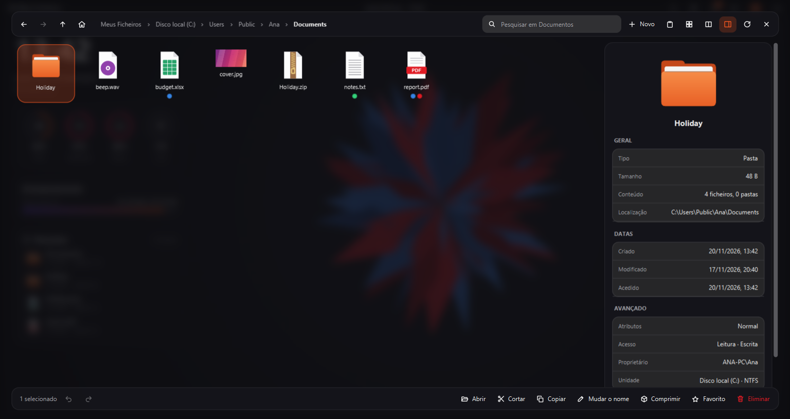
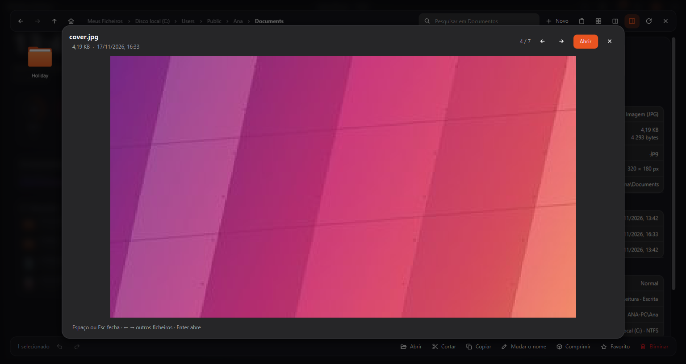
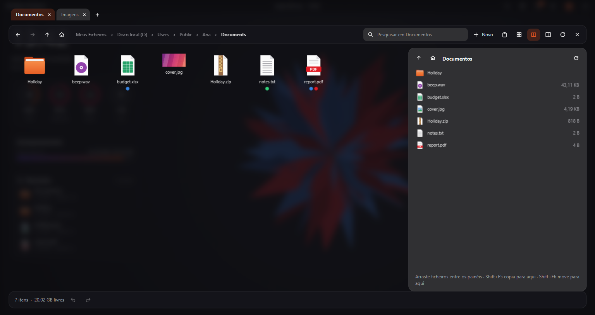

Meus Ficheiros: navegar
Meus Ficheiros é onde acontece todo o trabalho com ficheiros. Abre por cima do ambiente de trabalho com o fundo desfocado, como um menu de aplicações, e mostra as pastas como ícones grandes.
Locais#
| Local | O que lá encontra |
|---|---|
| Visão geral | Favoritos, Mais abertos, Recentes, Etiquetas, Coleções inteligentes, Pastas (Pasta pessoal, Ambiente de trabalho, Documentos, Transferências, Imagens, Música, Vídeos, e ainda Este PC, Linha do tempo, Saúde do disco, Cofre e Lixo), Unidades, Rede e Nuvem. |
| Qualquer pasta | O seu conteúdo, com miniaturas das imagens. |
| Este PC / Computador | As unidades com uma barra de utilização, nome e espaço livre. As pens USB têm um ícone próprio. |
| Lixo | Itens eliminados: restaurar, eliminar para sempre, esvaziar. |
| Saúde do disco | Consulte Saúde do disco. |
| Linha do tempo | Consulte Etiquetas, linha do tempo e automações. |
| Cofre | Consulte Cofre. |
| Cada etiqueta | Todos os ficheiros com essa etiqueta. |
Barra de ferramentas#

Da esquerda para a direita: Retroceder, Avançar, Subir um nível, Visão geral, o caminho clicável (clique em qualquer parte para ir até lá), a caixa de pesquisa, Novo (pasta ou documento de texto, transferir da internet, ligar a um servidor), Colar, Ver (ordenação, ficheiros ocultos, miniaturas, painel de detalhes), Vista dividida, Detalhes, Atualizar e Fechar.
Dica: escreva um caminho na caixa de pesquisa (por exemplo
D:\Projectsou~/Music) e carregue em Enter para ir diretamente para lá.
Selecionar#
| Ação | Como |
|---|---|
| Selecionar um item | Clique |
| Adicionar ou remover um item | Ctrl+clique |
| Selecionar um intervalo | Shift+clique |
| Selecionar tudo | Ctrl+A |
| Limpar a seleção | Clique numa área vazia, ou Esc |
| Abrir | Duplo clique ou Enter |
Quando algo está selecionado, a barra de ações em baixo mostra Abrir, Cortar, Copiar, Mudar o nome, Comprimir, Favorito e Eliminar (e Restaurar no Lixo). A barra de estado, à esquerda, mostra quantos itens estão selecionados, o espaço livre e os botões Anular / Refazer.
Detalhes e propriedades#
O painel de detalhes à direita mostra uma pré-visualização grande, o tipo, o tamanho (também das pastas, calculado em segundo plano), as datas, a localização e as etiquetas do item selecionado.
Propriedades (Alt+Enter, ou clique com o botão direito › Propriedades) abre este painel, organizado em secções:
- Geral — tipo legível (por exemplo "Documento PDF"), tamanho exato em bytes, conteúdo de uma pasta, dimensões da imagem, uma pré-visualização do texto;
- Datas — criação, modificação, último acesso;
- Avançado — atributos, proprietário, permissões POSIX, a unidade e o seu sistema de ficheiros, e um botão Calcular SHA-256;
- para unidades, Geral e Espaço — tipo (local ou amovível), nome, sistema de ficheiros, capacidade, espaço usado e livre.
Pré-visualização rápida#
Selecione um ficheiro e carregue em Espaço para o ver sem abrir outro programa.

| Ficheiro | O que vê |
|---|---|
| Imagens | A imagem, ajustada à janela |
| Texto e código | Os primeiros 256 KB (também ficheiros sem extensão conhecida, quando contêm texto) |
| Áudio e vídeo | Um leitor com Reproduzir/Pausa (MP3, WAV, AAC/M4A, MP4/H.264) |
| ZIP, DOCX, XLSX, PPTX, EPUB | A lista de ficheiros lá dentro, sem extrair |
| Pastas | Um resumo do conteúdo |
Use ← → para passar aos outros ficheiros da pasta, Enter para abrir o ficheiro no seu programa, e Espaço ou Esc para fechar.
Separadores#
| Ação | Atalho |
|---|---|
| Novo separador | Ctrl+T |
| Fechar separador | Ctrl+W |
| Separador seguinte / anterior | Ctrl+Tab / Ctrl+Shift+Tab |
| Abrir uma pasta num novo separador | Clique com o botão do meio, ou clique com o botão direito › Abrir num novo separador |
Cada separador guarda o seu próprio local, histórico de Retroceder/Avançar e pesquisa. A barra de separadores só aparece quando há dois ou mais separadores.
Vista dividida#
Carregue em F3 (ou no botão de divisão na barra de ferramentas) para ver uma segunda pasta lado a lado.

- Arraste e largue entre os dois painéis, para dentro de uma pasta, ou de outros programas para Meus Ficheiros.
- Shift+F5 copia e Shift+F6 move a seleção para o outro painel.
- As cópias passam pelo painel de transferências e podem ser anuladas; as etiquetas acompanham os ficheiros.
Manter a pasta atualizada#
O FileExp vigia a pasta aberta e atualiza-a sozinho quando algo muda (pode desligar isto em Definições › Ficheiros). F5 atualiza manualmente.